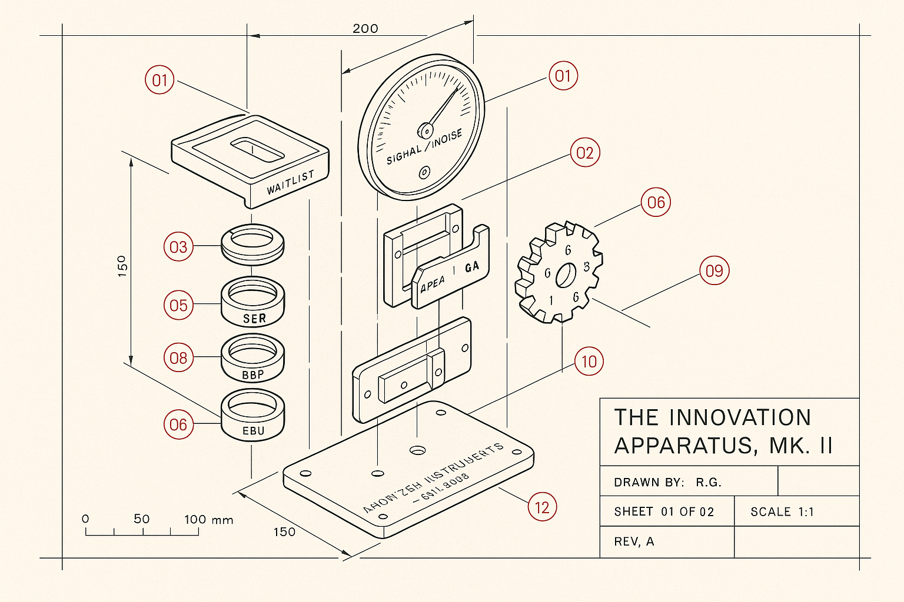
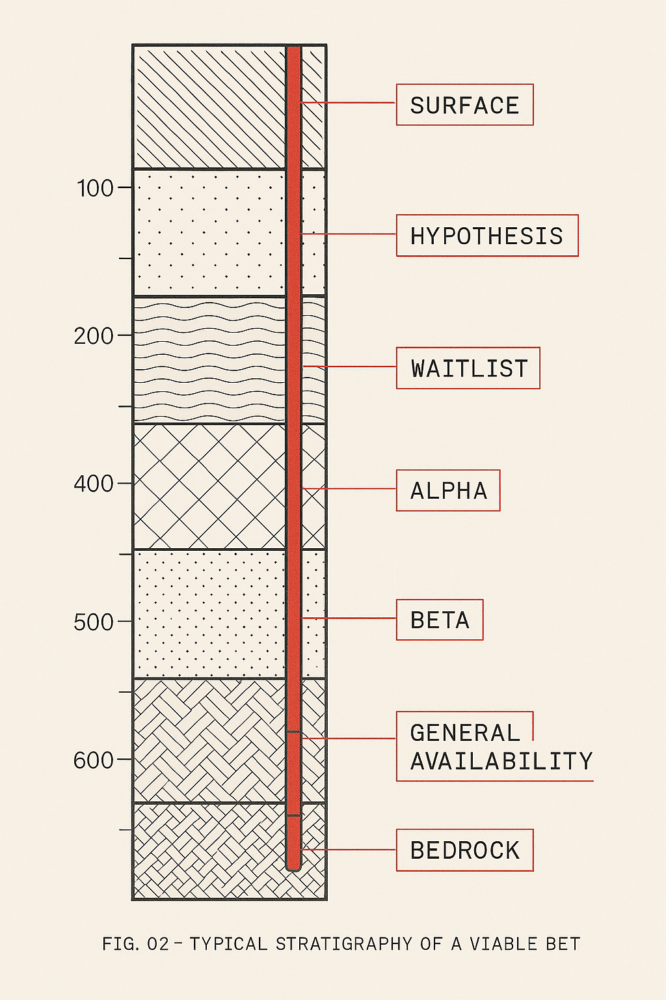
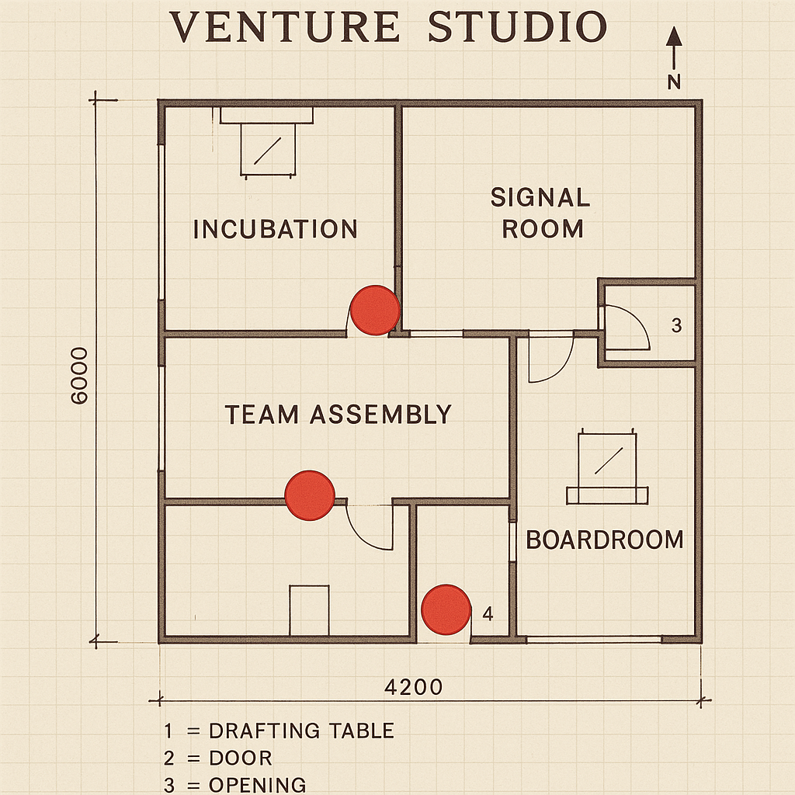

Two volumes. Nine steps. One operating theory, disassembled into its working parts and laid out on the table.
— Most books about innovation describe weather. This one describes a machine.

Most books about innovation describe weather. This one describes a machine.
For fourteen years, Axiom Zen has run the same experiment under different names — CryptoKitties, Dapper Labs, NBA Top Shot, NFL All Day, Flow. The hit rate is not an accident of timing or a function of the founder's taste. It is the output of a rig that was designed, tuned, and run to spec. The rig is what this book documents.
Volume I is the thesis. It lays out the nine steps of the Axiom Zen process, the three lenses every venture is measured against — SER, BBP, EBU — the archetype library the operator pulls from when assembling a team, and the Green Light Framework that decides when to advance and when to shelve. It is the physics of the apparatus, written down.
Volume II is the machine itself. The Alpha / Beta Phase-Gate Playbook is the working drawing — waitlist construction, Alpha closed-loop signal harvesting, Beta-gate criteria, the general-availability trigger, and the specific failure modes that have claimed the ventures that skipped a step. It is the schematic the operator keeps on the wall.
Innovation is not a weather system. It is a farm.Together the volumes make one claim, plainly: luck compounds where the soil is prepared for it, where the instruments are calibrated for it, where the operator knows which signals to amplify and which to dampen. The scientific method, pointed at creative work, looks exactly like this.
Scroll to read the plates. Each component is labeled. Each labeled component corresponds to a chapter. Each chapter corresponds to a lever an operator can actually pull on a Tuesday morning.
The book is the diagram. The diagram is the bet.

Nine steps. Three lenses — SER, BBP, EBU. An archetype library. A Green Light Framework that decides when to advance and when to shelve. Written down, for the first time, as a machine specification.

The Alpha / Beta Phase-Gate Playbook. Waitlist construction, closed-loop signal harvesting, Beta-gate criteria, GA triggers, and the failure modes that have claimed every venture that skipped a step.